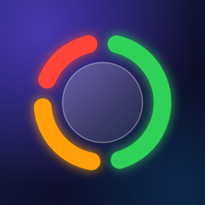

Privacy Policy
Platewise · Effective October 18, 2026
The short version
Platewise does not collect, store or share any personal data. There is no account, no advertising, no analytics and no tracking. Everything you log stays on your phone.
Who we are
Platewise is a food diary app for iPhone and Android developed by Andrija Eremić (“we”, “us”). For any privacy question, contact us at replace-me@example.com.
Data stored on your device
The foods you log, your categories (names, colors, portion sizes and nutrition values) and your daily goals are saved only in a database inside the app on your device. We have no server and cannot see, access or recover this data.
Your phone’s own backup (iCloud Backup on iPhone, Google backup on Android) may include the app’s data, depending on your device settings, and may restore it when you set up a new phone or reinstall the app. Those backups are handled by Apple or Google under their privacy policies.
Backups you export
Settings → Backup lets you export all your data to a file. The file is created on your device and is only saved or sent where you choose (for example Files, Google Drive, email or AirDrop). The service you choose handles the file under its own privacy policy. Importing a backup reads the file you pick and replaces the data in the app; nothing is uploaded by us.
“Ask AI”
When you tap Ask AI in the category editor, the app opens a Google search (AI Mode) in your phone’s web browser with a question built from the food name and portion you typed, for example “How many calories … are in 2 slices of Pizza?”. That search is sent to Google and handled under Google’s Privacy Policy. Nothing is sent unless you tap the button, and the app does not read anything back from the page.
Permissions
The app itself does not connect to the internet: Ask AI and the links to this policy and the help page open in your phone’s web browser. It uses vibration for haptic feedback. It does not access your location, contacts, photos, camera, microphone or health data.
Children
Platewise is not directed at children under 13 and does not knowingly collect any information from anyone, including children.
Deleting your data
You can delete individual entries in the app. Categories you have used are hidden rather than deleted, so past days keep their colors. To delete all data, uninstall the app; if your phone’s backup (see above) includes Platewise, also delete that backup in your device settings, or it may be restored later. Because we never receive your data, there is nothing for us to delete on our side.
Not medical advice
Nutrition values, day colors and goals in Platewise are estimates for general wellness and are not medical or dietary advice.
Changes to this policy
If this policy changes, for example when a new feature sends data off your device, we will update this page and the effective date above before that version of the app is released.